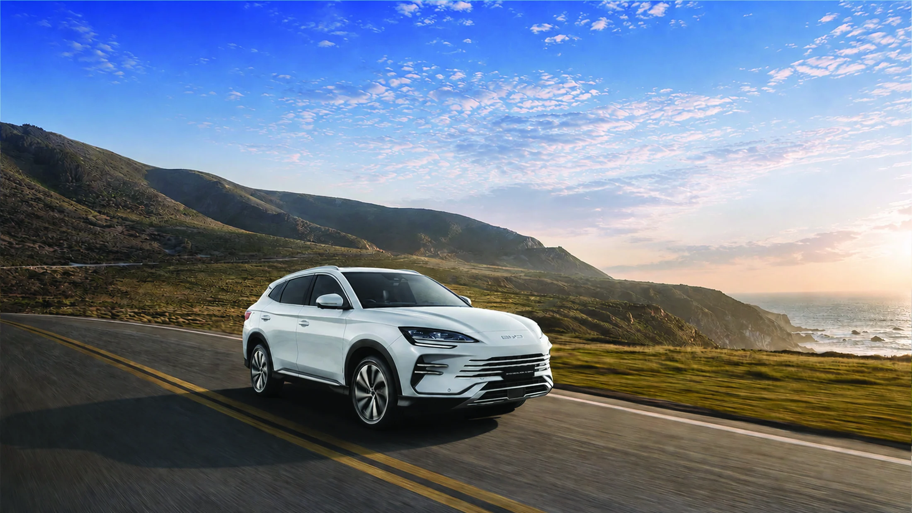
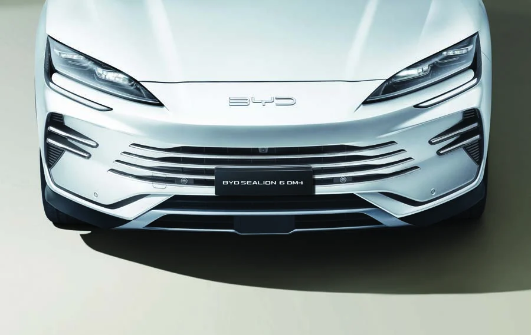
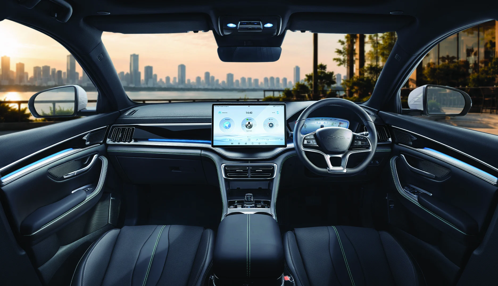
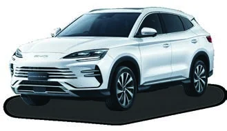
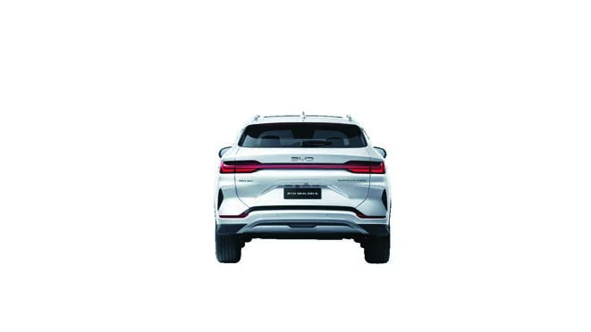

BYD OCEAN SERIES
BYD SEALION 6 DM-i
EFFICIENCY UNLEASHED
เลื่อนเพื่อเปิดหนังสือ
01 · PERFORMANCE
Performance
unleashed
ขุมพลัง BYD DM-i
มอเตอร์ไฟฟ้า + เครื่องยนต์

สปอร์ตพรีเมียมที่ไปได้ไกลกว่า
เทคโนโลยี BYD DM-i ขุมพลังที่ผสานกำลังจากมอเตอร์ไฟฟ้าและเครื่องยนต์ได้อย่างลงตัว พร้อม BYD Blade Battery ที่มีความปลอดภัยมาตรฐานระดับโลก
- กำลังรวมสูงสุด
- 160kW
- แรงบิดรวมสูงสุด
- 300N·m
- แบตเตอรี่สูงสุด · Extended
- 26.6kWh
- ระยะทางไฟฟ้า NEDC · Extended ①
- 150km
- AC Type 2 สูงสุด · ทุกรุ่น
- 6.6kW
- DC CCS2 สูงสุด · Extended
- 55kW
Dynamic / Premium: แบตเตอรี่ 18.3 kWh · ระยะทางไฟฟ้า 104 กม. (NEDC) · DC CCS2 สูงสุด 18 kW
① ระยะทางเป็นตัวเลขประมาณการสำหรับอ้างอิง อาจเปลี่ยนแปลงตามพฤติกรรมการขับขี่ น้ำหนักบรรทุก สภาพการจราจร และปัจจัยอื่น ๆ
02 · EXTERIOR
Ocean
series
กระจังหน้าดีไซน์โฉบเฉี่ยว ภายใต้แนวคิด BYD OCEAN SERIES

03 · INTERIOR
Interior design
unleashed
เติมเต็มสุนทรียภาพให้ทุกการเดินทาง ไปกับห้องโดยสารดีไซน์สปอร์ตพรีเมียมที่กว้างขวาง พร้อมเทคโนโลยีครบครัน

04 · ADAS
Safety
unleashed
360°
เลื่อนเพื่อดูระบบถัดไป
ภาพสาธิตแนวคิดของระบบ · ข้อมูลอ้างอิงโบรชัวร์
ระบบช่วยขับขี่ไม่สามารถทดแทนความรับผิดชอบของผู้ขับขี่ได้
กล้อง 360° มีทุกรุ่น · Dynamic มี CC · อุปกรณ์ระบบอื่นแตกต่างตามรุ่นย่อย
05 · SPECIFICATIONS
Find your
SEALION 6
เปรียบเทียบ Dynamic, Premium และ Extended
อุปกรณ์มาตรฐานทั้งหมด
● มีอุปกรณ์ · — ไม่มีอุปกรณ์ · ช่องที่มีค่าเดียวกันรวมตามข้อมูลในโบรชัวร์
หมายเหตุจากโบรชัวร์
- ระยะทางวิ่งด้วยไฟฟ้าสูงสุดอาจเปลี่ยนแปลงตามพฤติกรรมการขับขี่ น้ำหนักบรรทุก สภาพการจราจร และปัจจัยอื่น ๆ ตัวเลขเป็นเพียงประมาณการสำหรับอ้างอิง
- Bluetooth® เป็นเครื่องหมายการค้าจดทะเบียนของ Bluetooth SIG, Inc. ความเข้ากันได้และฟังก์ชันอาจต่างกันตามอุปกรณ์ที่เชื่อมต่อ
- Apple CarPlay® เป็นเครื่องหมายการค้าจดทะเบียนของ Apple Inc. จำเป็นต้องใช้อุปกรณ์ที่รองรับและสาย USB ส่วน Android Auto™ เป็นเครื่องหมายการค้าจดทะเบียนของ Google Inc. ต้องใช้อุปกรณ์ที่รองรับ สำหรับแบบไร้สายต้องมีแพ็กเกจอินเทอร์เน็ตที่มีประสิทธิภาพ รองรับ Wi-Fi 5 GHz และระบบปฏิบัติการเวอร์ชันล่าสุด
- การสตรีมมิ่งเพลงต้องใช้ข้อมูลอินเทอร์เน็ตหรือผ่านทาง Wi-Fi
- BYD Digital Key สำหรับ iOS และ Android ที่รองรับ iPhone, Samsung และ Google Pixel™ ตรวจสอบรุ่นโทรศัพท์ที่รองรับได้ใน BYD Application หรือการตั้งค่า BYD Digital Key บนจอมัลติมีเดีย
สีที่แสดงเป็นเพียงแนวทางและอาจต่างจากสีจริงเนื่องจากการพิมพ์ ระบบช่วยขับขี่ไม่สามารถทดแทนความรับผิดชอบของผู้ขับขี่ต่อยานพาหนะได้ BYD ขอสงวนสิทธิ์ในการเปลี่ยนแปลงข้อมูลคุณสมบัติของรถยนต์และอุปกรณ์มาตรฐานจากรายละเอียดในเอกสารนี้
06 · COLORS
Choose your
color

Horizon White
Dynamic · Premium · Extended
สีที่แสดงเป็นเพียงแนวทางและอาจแตกต่างจากสีจริง
ภายใน Dynamic / Premium: สีดำ / สีน้ำตาล · Extended: สีดำ
BYD PI-R MOTOR
LIFE IN MOTION

CONTACT · BYD PI-R MOTOR
ติดต่อเรา
พายอาร์ มอเตอร์
ข้อมูลรถและภาพอ้างอิงจากโบรชัวร์ BYD SEALION 6 DM-i ที่ได้รับ · รายละเอียดอุปกรณ์แตกต่างตามรุ่นย่อย · BYD ขอสงวนสิทธิ์ในการเปลี่ยนแปลงข้อมูลคุณสมบัติและอุปกรณ์มาตรฐาน